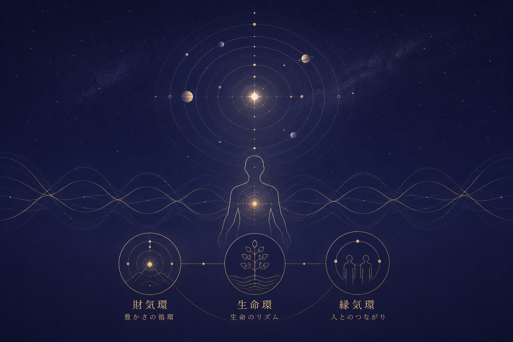

星辰環動共鳴理論
Stellar Astral-Cyclic Resonance Theory ―― SAC理論 ――

1. SAC理論とは
星辰環動共鳴理論（Stellar Astral-Cyclic Resonance Theory：SAC理論）とは、
宇宙に存在する周期的運動と、人間の生命活動・心理状態・社会的活動との間に存在する「環動的同調」を記述するための統合的理論
である。
SAC理論では、宇宙を「静止した物体の集合」ではなく、無数の周期運動が重なり合う巨大な動的系として捉える。
地球の自転、公転、月の運行、惑星の公転、季節変動、昼夜周期、生物の概日リズム、人間の活動と休息。これらはすべて異なる時間スケールを持つ周期現象である。
SAC理論では、これらの周期を単独で扱うのではなく、「周期と周期の関係」に注目する。
2. SAC理論の基本原理
SAC理論は、次の三原理から構成される。
第一原理：「宇宙は環動している」
宇宙には無数の周期運動が存在する。複数の周期が同時に存在することで、時間とともに変化する複雑なパターンが形成される。この総体を、星辰環動場と呼ぶ。
第二原理：「生命もまた環動系である」
人間は完全に一定の状態を保つ存在ではない。睡眠と覚醒、活動と休息、緊張と弛緩。SAC理論では、人間を次のような多重周期系として象徴的に表現する。
ここで、\(A_i\)：各環動成分の強度、\(\omega_i\)：環動周期、\(\phi_i\)：環動位相を表す。この式は、「人間の状態には複数の周期的要素が存在する」という思想を数学的に表現したものである。
第三原理：「周期が重なると共鳴点が生じる」
二つ以上の周期系が存在するとき、複数の環動位相が一定の範囲内で一致する状態（\(\phi_1 \approx \phi_2\)）を環動共鳴と呼ぶ。
このとき、人間は物事がうまく進むと感じ、この状態を「共鳴期」と呼ぶ。
3. 環動位相
単純な周期現象は \(x(t)=A\cos(\omega t+\phi)\) と表現でき、\(\phi\) はその周期の「現在位置」を表している。人間の状態を総合したものを人間環動位相と呼び、上昇位相・拡大型位相・安定位相・収束位相が存在する。
4. 星辰共鳴指数
現在の星辰配置と人間側の環動位相との調和度を、星辰共鳴指数（Stellar Resonance Index：SRI）によって表現する。
ここで \(w_i\) は各周期成分の重み、\(\Delta\phi_i\) は星辰側と人間側の位相差である。SRIが高いほど「星辰環動と人間環動が調和している」と解釈する。
5. 環動位相のずれ
うまくいかない状態は「運が悪い」のではなく、生活リズムの乱れやストレスによる環動デチューニング（位相のずれ）である。必要なのは努力ではなく再調律である。
6. 環動再調律
自分自身の周期的生活を見直し、環動位相の乱れを小さくすること。これによって波動を高め、共鳴点を認識しやすくする。
7. 三環モデル
人間の生活を財気環（お金・仕事）、生命環（身体・活力）、縁気環（人間関係）の三つに分類する。
三つの環が支え合う状態を三環調和状態と呼ぶ。
8. 財気環
「豊かさの循環」を表す。循環の停滞を「財気滞留」、滑らかな流れを「財気流動」と呼ぶ。
9. 生命環
活動と休息の周期を表す。適切な状態を「生命調律状態」と呼ぶ。
10. 縁気環
人と人との関係を表す。環動位相が重なった時に生じる現象を縁気共鳴と呼ぶ。
11. 星辰環動共鳴札の役割
札は「環動を意識するための基準点」として機能し、自分自身の状態を客観視する「環動意識」を形成する。
12. なぜ壁に掛けるのか
視覚的反復刺激による環動アンカー効果狙いである。自分自身の意識を一定の場所へ戻すための錨となる。
13. SAC理論における「引き寄せ」
意識が変わり選択・行動が変わる一連の過程を環動誘導と呼ぶ。自分自身が宇宙との関わり方を変えるのが引き寄せである。
14. SAC理論の最終概念――大環
三つの環が重なった領域を「大環共鳴領域」と呼ぶ。
SAC理論では高めることより、整えることを重視する。
15. 星辰環動共鳴札の哲学
世界が周期と変化によって構成されている事実を捉え、「人生とは、止まっているものではなく、巡っているものである」と認識する思想体系である。
SAC理論の基本式
\(R_{\mathrm{SAC}}\)：星辰環動共鳴度 ／ \(\Delta\phi\)：位相差 ／ \(\omega\)：周期 ／ \(A\)：強度 ／ \(E\)：環境要因